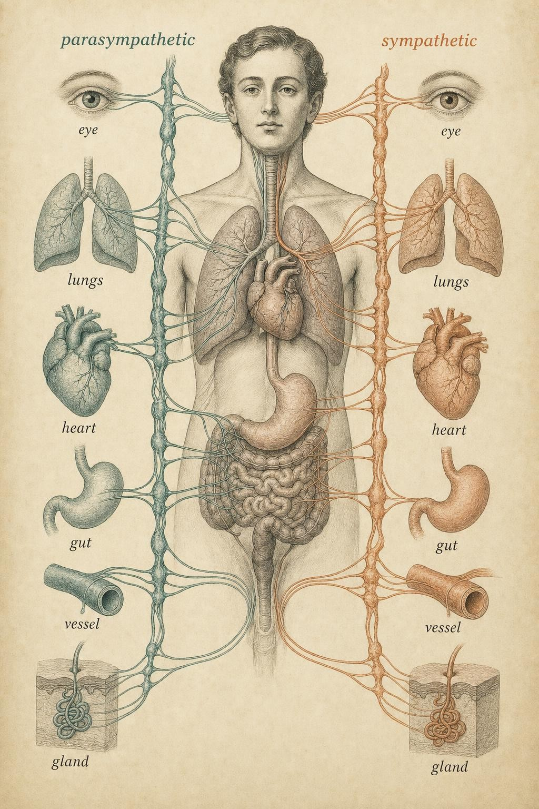

The Two Pedals: How the Body Runs Itself
The automatic branch of the nervous system, and why it works like a gas pedal and a brake rather than a simple on/off switch.
You are half a block from the bus stop when the doors start to close. Without deciding anything, your body reorganizes itself. Your heart, idling around 70 beats a minute a moment ago, jumps toward 130. The smooth muscle ringing your bronchi relaxes, and your airways open a little wider to move more air with every breath. Your pupils widen. The pleasant, slightly heavy fullness in your stomach from breakfast simply switches off, and blood that had been busy with digestion is rerouted toward your legs. A thin film of sweat appears on your palms. You did not order any of this, and you could not have stopped it if you had tried. By the time your conscious mind has finished forming the single word run, the machinery is already running.
This is the work of the autonomic nervous system (ANS), the branch of the peripheral nervous system we previewed in Chapter 2 as the part that governs everything you do not steer. In this chapter we open that door fully, and the single most important idea inside is not a list of organs or a list of chemicals. It is a design principle. The body does not have one accelerator for on and a separate power button for off. It has two pedals, pressed in continuous, shifting combination, on the very same set of organs, all day long, whether or not a bus is involved.
Throughout this chapter you will follow one learner, Ravi, a 33-year-old who arrived at this course after a wearable ring convinced him that his nervous system was permanently stuck in overdrive. The app bundled with the ring scored him every morning, and on the mornings the score was low, it told him, in so many words, that his sympathetic branch was winning and his parasympathetic branch was losing. He started treating any rise in his heart rate as a small defeat. A hard set at the gym, a tense email from a manager, and a funny movie that made his pulse jump were all filed under the same heading: bad for my nervous system. He bought a breathing app, cut his training in half, and tried to spend as much of the day as he could in the state the marketing called parasympathetic dominance. Three months later he felt strangely flat, and his score had barely moved. Ravi is not a patient in this course and he is not a case to be solved. He is a stand-in for a specific, common confusion: the belief that one branch of the autonomic nervous system is simply good and the other is simply bad. By the end of this chapter you will be able to explain exactly where that belief goes wrong.
The automatic control layer
Recall the map from Chapter 2. The peripheral nervous system splits into a somatic division, the nerves that carry your deliberate commands to skeletal muscle and carry touch and position back, and an autonomic division that runs the internal machinery. When you flex a finger, that is somatic. When your intestines contract to move a meal along, or your arterioles narrow to hold your blood pressure steady as you stand up, that is autonomic. With one notable exception, skeletal muscle, which stays under somatic command, the autonomic system reaches nearly every organ in the body, tuning the internal environment moment to moment (Wehrwein, Orer, and Barman, 2016).
The word autonomic shares a root with autonomous, and that is the right intuition: this is the control layer that operates without asking. Its job is homeostasis, keeping the internal state of the body inside the narrow bands that keep cells alive, and it does that job largely below the threshold of awareness. Some physiologists also describe a semi-independent third division, the enteric nervous system, a dense mesh of neurons embedded in the wall of the gut that can coordinate digestion even when its connections to the brain are cut (Wehrwein, Orer, and Barman, 2016). We will not need it in this chapter, but it is worth knowing it exists, because it is a reminder of how much autonomic governing this body performs without a central office signing off on every decision. You will also meet the question of how you sense these internal changes in Chapter 6, on interoception. For now, the point is simply that a vast amount of physiological governing happens without you, and the autonomic system is the governor.
Architecturally, the autonomic system has a signature that distinguishes it from the somatic nerves: it reaches its targets through a two-neuron chain. A first neuron runs from the brainstem or spinal cord out to a relay station called a ganglion, and a second neuron runs from the ganglion to the organ. Physiologists call these the preganglionic and postganglionic neurons (McCorry, 2007). The two branches build this chain on different blueprints, and the difference is not a trivia point, it explains why the two branches feel so different in practice. Sympathetic preganglionic neurons leave the spinal cord and travel only a short distance before synapsing in a chain of ganglia that runs alongside the spine, after which a long postganglionic neuron fans out to the target organ. Parasympathetic preganglionic neurons do the opposite: they travel a long distance, largely through a single remarkable nerve called the vagus, before synapsing in a ganglion sitting near or inside the target organ itself, leaving only a short postganglionic neuron to finish the job (McCorry, 2007; Wehrwein, Orer, and Barman, 2016). That single architectural choice explains a pattern you will see again and again in this chapter: sympathetic activation tends to arrive as a broad, whole-body event, because one short preganglionic fiber can branch out to many chain ganglia at once, while parasympathetic activation tends to arrive as a series of local, organ-by-organ adjustments, because each ganglion sits close to the one organ it serves. Anatomists sometimes label the two branches by where their preganglionic neurons actually leave the central nervous system: the sympathetic branch as thoracolumbar outflow, because its fibers exit from the middle and lower segments of the spinal cord, and the parasympathetic branch as craniosacral outflow, because its fibers leave from a handful of cranial nerves near the base of the brain and from the lowest segments of the spinal cord, with almost nothing in between (McCorry, 2007). That gap in the middle of the spinal cord is not an accident of anatomy. It is a physical illustration of how differently the two systems are built to operate, one compact and centrally organized for a fast, unified broadcast, the other distributed and locally organized for a patient, organ-specific correction. You do not need to memorize the wiring diagram to use this chapter, but keep the fan-out idea in mind. It is what turns a single situation, the closing bus doors, into a coordinated pattern across your whole body rather than a change in one organ alone.
Two pedals, not a switch
The autonomic system has two principal divisions, and this is where the whole chapter turns. The sympathetic branch mobilizes the body for action: it spends energy, raises output, and prepares you to do something demanding. The parasympathetic branch conserves and restores: it lowers output, banks energy, and runs the quiet maintenance of digestion, repair, and recovery. The classic shorthand, fight or flight for sympathetic and rest and digest for parasympathetic, is useful precisely because it captures whole patterns rather than single effects.
The metaphor to hold onto is a car with two pedals. The sympathetic branch is the gas, the parasympathetic branch is the brake. And here is the crucial part: in a moving car you are almost never at zero on both. You feather the gas, you touch the brake, you lift off, you press again. The interesting variable is not which pedal but the shifting balance between them. At any given instant your organs are receiving some blend of accelerating and decelerating commands, and your physiological state is the net result of that blend, not a verdict handed down by one branch acting alone.
This is why the framing of a switch, sympathetic on, parasympathetic off, is misleading. Both branches maintain a baseline level of ongoing activity, called tone, at essentially all times. Your resting heart rate is a useful demonstration of what that means. Left entirely to its own internal pacemaker, the sinoatrial node in a human heart would fire around 100 to 110 times a minute. The reason your resting heart rate sits closer to 60 or 70 is that the parasympathetic branch is pressing the brake continuously, through the vagus nerve releasing acetylcholine onto the pacemaker cells and slowing them down (Shaffer, McCraty, and Zerr, 2014). Rest is not the absence of activity. It is an active, ongoing command, issued and reissued every second you are calm.
Keep this in mind as a correction to a popular caricature we will dismantle more fully at the chapter's end: the idea that sympathetic activity is bad stress and parasympathetic activity is good calm. Neither branch is the villain. A body that cannot mobilize is as impaired as a body that cannot recover. Health lives in flexible balance, the capacity to press either pedal quickly and firmly and then to let off, not in permanent calm.
Notice what the Balance Board demonstrates that a list of facts cannot: the organs do not respond independently. You move one control, and heart rate, airways, pupils, gut, sweat, and blood flow all shift together in a coherent direction. That coordination is the heart of the chapter. The body is not adjusting six separate knobs. It is leaning on two pedals, and the organs come along for the ride, each one contributing its own piece to a single, whole-body posture.
The chemical signatures of each branch
In Chapter 3 you met the neurotransmitters as the vocabulary of the nervous system, the specific molecules a neuron releases to speak to its target. The two autonomic branches are distinguished not only by what they do but by what they say, and their chemistry gives us a clean way to tell them apart.
Both branches use acetylcholine for the first link in their two-neuron chain, meaning both preganglionic neurons are cholinergic and act on nicotinic receptors at the ganglion. The branches diverge at the final step, the message delivered to the organ itself. The parasympathetic branch delivers acetylcholine again at that final step, acting on muscarinic receptors, so acetylcholine is the closing signature of rest and digest. The sympathetic branch, by contrast, releases norepinephrine (also called noradrenaline) at most of its organ targets, acting on a family of adrenergic receptors that come in several subtypes distributed differently across tissues. So as a working rule: parasympathetic largely speaks in acetylcholine, sympathetic largely speaks in norepinephrine (Wehrwein, Orer, and Barman, 2016; Karemaker, 2017).
Largely is doing honest work in that sentence. There are well-known exceptions: the sympathetic nerves that drive most sweat glands, for example, release acetylcholine rather than norepinephrine, even though they belong to the sympathetic chain, and the branches also carry co-transmitters alongside their main messenger (Karemaker, 2017). The receptor side adds its own nuance too. Because different organs carry different mixes of adrenergic receptor subtypes, the identical molecule, norepinephrine, or its hormonal cousin epinephrine, can produce opposite mechanical effects in different tissues at the same moment, tightening one vessel while relaxing an airway. We will meet that nuance directly in the organ-by-organ section ahead. For a working mental model, the clean pairing, parasympathetic equals acetylcholine and sympathetic equals norepinephrine, is the right thing to remember. Just hold it loosely enough that a physiology-minded friend cannot ambush you with sweat glands.
The adrenal medulla: a hormonal amplifier
The sympathetic branch has a second way to reach the body, and it is a hormonal one rather than a neural one. Sitting atop each kidney is an adrenal gland, and its inner core, the adrenal medulla, is essentially a modified sympathetic ganglion. Rather than growing a normal postganglionic neuron that reaches out to a single organ, the medulla's chromaffin cells are innervated directly by sympathetic preganglionic fibers, and when those fibers fire, the chromaffin cells release their contents straight into the bloodstream: mostly epinephrine (adrenaline), with a smaller share of norepinephrine (McCorry, 2007; Wehrwein, Orer, and Barman, 2016).
This matters because it changes the character of the signal. Nerve-to-organ signaling is fast and targeted, a private message delivered directly to a single organ and cleared within moments. Hormonal release into the blood is slower to arrive but reaches every tissue at once and lingers far longer, because it has to travel by circulation rather than by wire and has to be cleared by the liver and kidneys rather than reabsorbed at a synapse. So the adrenal medulla acts as an amplifier and a sustainer. It broadcasts the sympathetic message body-wide and holds the mobilized state in place well after the initial neural burst has stopped firing. This is why the pounding heart and shaking hands that follow a near-accident outlast the danger by several minutes. The nerves have long since gone quiet. The adrenaline is still in circulation, doing its work.
Walter Cannon, the Harvard physiologist who coined the phrase fight or flight, recognized this dual mechanism more than a century ago. In his 1915 monograph he described how sympathetic activation and adrenal secretion together produce a single coordinated emergency pattern, a faster heart, dilated pupils, halted digestion, and sugar mobilized into the blood, and argued that this pattern is a survival adaptation, a body preparing itself to fight or to flee (Cannon, 1915). The insight has aged remarkably well, and the mechanism he described in outline is, a century later, the one confirmed in detail by the review literature cited throughout this chapter.
McCorry (2007) closes her review with a second teaching case that mirrors the first from the opposite direction: a rare tumor of the adrenal medulla, called a pheochromocytoma, that secretes large and erratic bursts of epinephrine and norepinephrine independent of ordinary nervous control. Based on what you now know about the sympathetic branch's chemical signature, you can predict the pattern a person with this tumor might notice: episodes of a pounding heart, spiking blood pressure, flushing or sweating, and a wave of unexplained anxiety, arriving seemingly out of nowhere and subsiding on their own once the burst of hormone clears from the blood. Where the insecticide case shows what happens when the parasympathetic chemical signature floods the body unchecked, the pheochromocytoma case shows what happens when the sympathetic hormonal amplifier fires without any nervous command behind it at all. Both are genuine medical presentations, and both are exactly the kind of pattern that belongs with a physician, an emergency department, or an endocrinologist, not a symptom tracker or a wellness forum.

Most organs receive input from both branches, and dual innervation is the anatomical basis of the two-pedal design." data-image-idx="1" style="display:block;max-width:100%;max-height:75vh;height:auto;width:auto;margin:0 auto;cursor:pointer;">Organ by organ: the mobilized pattern
Let us return to the closing bus doors and walk through the sympathetic pattern organ by organ, because the logic is beautifully consistent. Every effect answers a single question: what does a body about to run actually need?
The heart beats faster and harder. Sympathetic fibers reaching the sinoatrial node and the ventricular muscle raise both the rate and the force of contraction, an effect called positive chronotropy and positive inotropy, driving more oxygenated blood per minute toward the muscles that will do the work (Shaffer, McCraty, and Zerr, 2014). This is the effect you feel most directly, and it is the one your wearable device is almost certainly reading.
The lungs. The smooth muscle around the bronchi relaxes, widening the airways so that each breath moves more air. Interestingly, this particular effect leans more heavily on the hormonal channel than on direct nerve contact. Bronchial smooth muscle receives sparse sympathetic nerve fibers, but it carries a rich supply of the receptor subtype that responds to circulating epinephrine, so much of the widening you feel under sympathetic activation is really the adrenal medulla's hormone reaching the lungs through the blood rather than through a private nerve wire (Wehrwein, Orer, and Barman, 2016). More airflow means more oxygen available to load onto that faster-moving blood.
The pupils dilate. The iris carries two opposing muscles: a radial muscle that widens the pupil under sympathetic command, and a circular muscle that narrows it under parasympathetic command. A wider pupil admits more light and sharpens the detection of movement in the periphery, useful when the relevant information is out there in the world rather than up close.
The gut. Digestion pauses. Sympathetic fibers traveling through the splanchnic nerves reduce blood flow to the stomach and intestines, slow motility, tighten certain sphincters, and reduce digestive secretions. Digestion is metabolically expensive and, in an emergency, entirely optional, so the body defers it and reallocates the resources elsewhere.
Blood vessels. This one is subtle and important, and it is where the receptor-subtype nuance from earlier in the chapter becomes visible. Sympathetic activation narrows vessels feeding lower-priority tissues, such as the gut and skin, through one receptor subtype, while simultaneously widening vessels feeding the working skeletal muscles through a different receptor subtype that responds to the same circulating hormones. The same branch, using the same molecules, produces opposite mechanical outcomes in different tissues at the same instant. The net effect is a redistribution: blood is routed toward where it is needed and away from where it is not.
Sweat glands activate, priming the body to shed the heat that vigorous effort will generate. As noted earlier, this is the acetylcholine exception: sympathetic in origin, but cholinergic in chemistry.
A few further organs round out the picture and are worth knowing even though they rarely make it into the popular retelling. The liver begins breaking down stored glycogen into glucose under sympathetic and adrenal signaling, adding fuel to the bloodstream to match the muscles' rising demand. The bladder relaxes its storage muscle and tightens its internal sphincter, postponing a task that can wait. Salivary glands shift from the thin, watery secretion of a relaxed state to a thick, sparse one, which is the physiological basis of the dry mouth that accompanies genuine fear. And the tiny muscles at the base of body hair, the ones responsible for goosebumps, receive sympathetic input only. There is no parasympathetic counterpart for them at all, a useful early reminder that not every organ in this chapter is dually wired, a point the next section will treat properly.
Read as a whole, the pattern is a single coherent posture: mobilize energy, prioritize the muscles and the senses, defer maintenance. No organ is acting on its own agenda. Each is a line in the same paragraph.
The mirror image: rest and digest
Now imagine the opposite scene. You have made the bus, found a seat, and settled in, or better, you are home after dinner, warm and unhurried. The parasympathetic branch takes the lead, largely through the vagus nerve, which physiologists sometimes call the great wandering nerve because it travels from the brainstem down through the neck and chest into the abdomen, carrying the majority of the body's parasympathetic outflow along the way. Under its influence, the whole pattern reverses.
The heart slows as vagal braking increases. The airways narrow toward baseline. The pupils constrict, appropriate for near work and calm conditions. The gut comes alive: blood flow returns, motility resumes, digestive glands secrete, and sphincters relax to let a meal move forward. Vessels feeding the digestive organs widen to supply the renewed activity. Sweating subsides, and saliva returns to its thin, watery baseline. The body's message is now the inverse of the sprint: conserve energy, run maintenance, digest, repair, restore.
Here the two-pedal logic becomes vivid. The same organs, described twice, move in opposite directions depending on which branch has the upper hand. The organs did not change. The balance did.
The organism which with the aid of increased adrenal secretion can best muster its energies… can best call upon its reserves of strength, will best survive the perilous emergencies which involve fighting or flight.
Walter B. Cannon, Bodily Changes in Pain, Hunger, Fear and Rage (1915)
Dual innervation and dynamic balance
Why can the very same organs go both directions? Because most of them receive fibers from both branches, a feature called dual innervation. The heart has sympathetic nerves that speed it and vagal fibers that slow it. The pupil has a muscle that dilates it, under sympathetic command, and a muscle that constricts it, under parasympathetic command. With two opposing inputs converging on one organ, the organ's state is the running sum of the two commands (Wehrwein, Orer, and Barman, 2016).
It is worth being precise here, because dual innervation is one of those textbook phrases that gets flattened in the retelling. In his authoritative treatment, Jänig (2006) points out that strict, cell-by-cell dual innervation, where a single target cell literally receives both fibers side by side, is more limited than the popular picture suggests. What is robust and physiologically real is organ-level reciprocal control: at the scale of the whole organ, the two branches exert opposing influences, and the balance between them sets the output. That is the honest version of the two-pedal model, and it is the one worth carrying. A few organs, notably most blood vessels and, as you just saw, the tiny muscles that raise body hair, are effectively controlled by the sympathetic branch alone. The brake for them is not a second nerve but simply easing off the accelerator (Karemaker, 2017).
The phrase that best captures the resulting arrangement is dynamic balance. Your autonomic state is never fixed. It is continuously renegotiated, breath by breath, as your brainstem and hypothalamus integrate signals from the body and from higher brain regions and adjust the two outputs accordingly (Benarroch, 2020). This regulation is centralized in specific structures, the medulla for cardiovascular control, the hypothalamus as a coordinator, and the insular cortex as a sensory hub, which is why an emotion or an anticipated threat, processed high in the brain, can reach all the way down to your heart rate before you have consciously registered why. We will follow that top-down pathway into the full stress response in Chapter 5.
A vivid, common example of what happens when this balance overcorrects is the ordinary fainting spell that some people experience at the sight of blood or a needle. The initial alarm produces a brief sympathetic spike, heart rate and blood pressure both rise, but in a susceptible person the parasympathetic brake then engages so abruptly and so strongly that heart rate and blood pressure both crash within seconds, starving the brain of blood flow and producing a faint. Physiologists call this a vasovagal response, and it is a useful, if uncomfortable, demonstration that dual innervation is not a gentle tug-of-war at every moment. It can occasionally become a genuine overcorrection, one branch's command overshooting so far that it undoes the very stability the system exists to protect. Most people never experience anything close to this extreme, but the phenomenon is a clean illustration of the larger point: what matters is not which pedal is pressed, but whether the two are working together in proportion.
Why balance beats calm: the heart as a window
Now we can retire the caricature for good. The intuition that sympathetic activity is harmful and parasympathetic activity is healthy confuses a chronic imbalance with the branches themselves. The evidence points not to less sympathetic, more parasympathetic is always better, but to flexibility, the ability to shift quickly and appropriately in either direction and then to let go.
The clearest window onto this balance is heart rate variability (HRV), the small beat-to-beat fluctuations in the timing between heartbeats. A healthy heart is not a metronome (Shaffer, McCraty, and Zerr, 2014). Because the two branches are constantly tugging on the pacemaker, a well-regulated heart shows meaningful variability. It is responsive, ready to speed or slow on short notice. Reduced HRV signals a loss of that regulatory capacity, a system that has become stuck rather than agile.
Thayer, Yamamoto, and Brosschot (2010), in a widely cited review, describe autonomic imbalance, a chronically overactive sympathetic branch paired with an underactive parasympathetic branch, as a final common pathway linked to increased disease risk, including cardiovascular disease, with reduced HRV serving as a noninvasive index of the problem. Read carefully, this does not say sympathetic activity is bad. It says the danger lies in getting stuck: losing the ability to let off the gas and apply the brake in turn. A body that mobilizes hard and then recovers cleanly is a healthy body. A body that mobilizes and cannot come back down is the actual concern.
Karemaker (2017) adds a note of methodological caution worth respecting. The popular language of sympathovagal balance, and the practice of reading it straight off a single HRV number, oversimplifies a genuinely complex system. HRV is a useful window, not a direct dial you can read the two branches off of with precision. Treat it as a helpful indicator of regulatory flexibility, not as a literal sympathetic-to-parasympathetic ratio printed on a screen each morning.
If a scenario tripped you up, look at which organ you missed. Public speaking is a common one: it feels like a threat, so the sympathetic pattern engages fully even though nothing is physically dangerous, a preview of Chapter 5's central point that the stress response answers perceived demand, not just physical demand. And a warm meal shows the parasympathetic branch doing its most literal work: rest and digest is not a slogan here, it is a description of blood flow actually returning to your gut. Keep both of these scenarios in mind, because they are exactly the pair Ravi, our learner from the opening of this chapter, kept confusing.
Case study: Ravi and the number he was trying to erase
Run Ravi's situation through this chapter and most of the confusion dissolves, not into a verdict about his health, which is not this course's place to give, but into a set of honest corrections the marketing around his device had skipped. Start with the workouts he canceled. A hard training session genuinely raises sympathetic tone and lowers HRV during and shortly after the effort, exactly as the Balance Board demonstrated. But that is an appropriate, time-limited press of the gas pedal, precisely the kind of flexible, quickly resolving response that Thayer, Yamamoto, and Brosschot (2010) associate with a well-regulated system, not a poorly regulated one. Treating an exercise-induced rise as evidence of a damaged nervous system gets the physiology backward. Suppressing it does not make a person healthier. It removes one of the more reliable, well-established supports for cardiovascular and autonomic health that exists.
Move to the low-score mornings themselves. Karemaker's (2017) caution applies directly here: HRV is a genuinely useful signal, but reading a single morning number as a verdict overstates what any one measurement can tell a person. Day-to-day HRV shifts for many ordinary reasons, sleep timing, alcohol, travel, a cold coming on, even where a person happened to be sleeping, and most of that variation reflects the normal churn of daily life rather than an accumulating injury to the nervous system. A person who treats every dip as bad news is not reading a signal correctly. They are reading noise as if it were a diagnosis.
Now the larger goal Ravi had set for himself: living in parasympathetic mode as much as possible. This is the switch-versus-pedals error made concrete. A nervous system that never pressed the gas pedal would not be a picture of health. It would be unable to stand up without fainting, unable to raise its own blood pressure to meet the demand of climbing a flight of stairs, unable to mobilize the fuel and alertness a genuine emergency requires. Dual innervation and dynamic balance exist precisely because the body needs both commands available on short notice, not because one of them is a mistake to be minimized. By trying to erase his sympathetic responses altogether, Ravi was, in effect, trying to disable half of a system that only works because it has two halves.
Here is what actually changed for Ravi, and it is the real deliverable of this section. He did not receive a diagnosis, and this chapter is not equipped to give one. What he received was a better model of the number he had been staring at. A single morning score is not a verdict, an exercise-induced dip is not damage, and the goal was never to live in one branch permanently. He resumed training, stopped canceling plans over a single low reading, and started reading his data across weeks rather than mornings, watching for a sustained pattern rather than a single number. He also learned where his own understanding, and this course's, has to stop. If he had noticed something his device cannot explain, an unusually fast heart rate while simply standing still, for instance, or racing episodes with no clear trigger, that would be a question for a clinician, not a firmware update.
Where understanding ends
It is worth naming the line this chapter has been walking all along, because the wellness market around the autonomic nervous system is large and often confident in ways the underlying science is not. Ravi's ring is one small example of a much bigger category: gadgets and programs promising to tone your vagus nerve, hack your nervous system, or shift you permanently into a calmer autonomic state. Some of the underlying physiology in that marketing is real, the vagus nerve genuinely carries most of the parasympathetic outflow, and breathing practices genuinely can nudge heart rate variability in the short term. What is oversold is the idea that a person can, or should, simply dial their sympathetic branch down to nothing and stay there, and the idea that a wearable can substitute for a clinical evaluation.
Genuine autonomic dysfunction does exist, and it deserves to be taken seriously rather than folded into wellness marketing. One well-documented example is postural orthostatic tachycardia syndrome, in which a person's heart rate rises excessively and persistently upon standing, well beyond the ordinary adjustment everyone makes, along with symptoms like lightheadedness and fatigue. That is a real, diagnosable condition that involves the very branches this chapter has described, and it requires a clinician equipped to test for it, not a ring, an app, or a chapter like this one. The difference between Ravi's situation and a case like that is exactly the difference this course exists to teach: understanding the mechanism is what lets a person ask an accurate question and recognize when a symptom has crossed from ordinary variability into something that belongs with a professional.
Key Takeaways
- The autonomic nervous system (ANS) is the automatic control layer of the peripheral nervous system, governing nearly every organ except skeletal muscle to maintain homeostasis without conscious input.
- It has two branches that act like two pedals on the same organs: the sympathetic branch mobilizes energy for action (fight or flight), and the parasympathetic branch conserves and restores (rest and digest).
- The branches have distinct chemical signatures: parasympathetic organ signaling is largely cholinergic (acetylcholine), sympathetic organ signaling is largely noradrenergic (norepinephrine), and the adrenal medulla broadcasts epinephrine into the blood to amplify and sustain the sympathetic pattern.
- Any autonomic state is a coordinated whole-body pattern: heart, lungs, pupils, gut, vessels, and glands move together, not as a set of isolated effects. One shift in balance moves all the organs.
- Because most organs are dually innervated, organ output reflects the running balance between the two branches. Both branches carry constant baseline tone, and rest is an active command, not the absence of one.
- Neither branch is good or bad. Health is flexible balance and quick switching, captured indirectly and imperfectly by heart rate variability, while chronic imbalance and lost flexibility, not sympathetic activity itself, are what signal risk.
- This is education, not diagnosis. Understanding the mechanism helps a learner ask better questions and recognize when a symptom belongs with a qualified clinician rather than a self-directed experiment.
We have met the gas pedal and the brake. Next, in Chapter 5, we press the gas hard: the full stress response, from the fast sympathetic-adrenal surge to the slower hormonal cascade, and, just as important, the parasympathetic recovery brake that brings the body back down. You will see why the ability to stop mobilizing is as vital as the ability to start.
References
Benarroch, E. E. (2020). Physiology and pathophysiology of the autonomic nervous system. Continuum: Lifelong Learning in Neurology, 26(1), 12-24. https://doi.org/10.1212/CON.0000000000000817
Cannon, W. B. (1915). Bodily changes in pain, hunger, fear and rage: An account of recent researches into the function of emotional excitement. D. Appleton and Company.
Jänig, W. (2006). The integrative action of the autonomic nervous system: Neurobiology of homeostasis. Cambridge University Press.
Karemaker, J. M. (2017). An introduction into autonomic nervous function. Physiological Measurement, 38(5), R89-R118. https://doi.org/10.1088/1361-6579/aa6782
McCorry, L. K. (2007). Physiology of the autonomic nervous system. American Journal of Pharmaceutical Education, 71(4), Article 78. https://doi.org/10.5688/aj710478
Shaffer, F., McCraty, R., & Zerr, C. L. (2014). A healthy heart is not a metronome: An integrative review of the heart's anatomy and heart rate variability. Frontiers in Psychology, 5, Article 1040. https://doi.org/10.3389/fpsyg.2014.01040
Thayer, J. F., Yamamoto, S. S., & Brosschot, J. F. (2010). The relationship of autonomic imbalance, heart rate variability and cardiovascular disease risk factors. International Journal of Cardiology, 141(2), 122-131. https://doi.org/10.1016/j.ijcard.2009.09.543
Wehrwein, E. A., Orer, H. S., & Barman, S. M. (2016). Overview of the anatomy, physiology, and pharmacology of the autonomic nervous system. Comprehensive Physiology, 6(3), 1239-1278. https://doi.org/10.1002/cphy.c150037